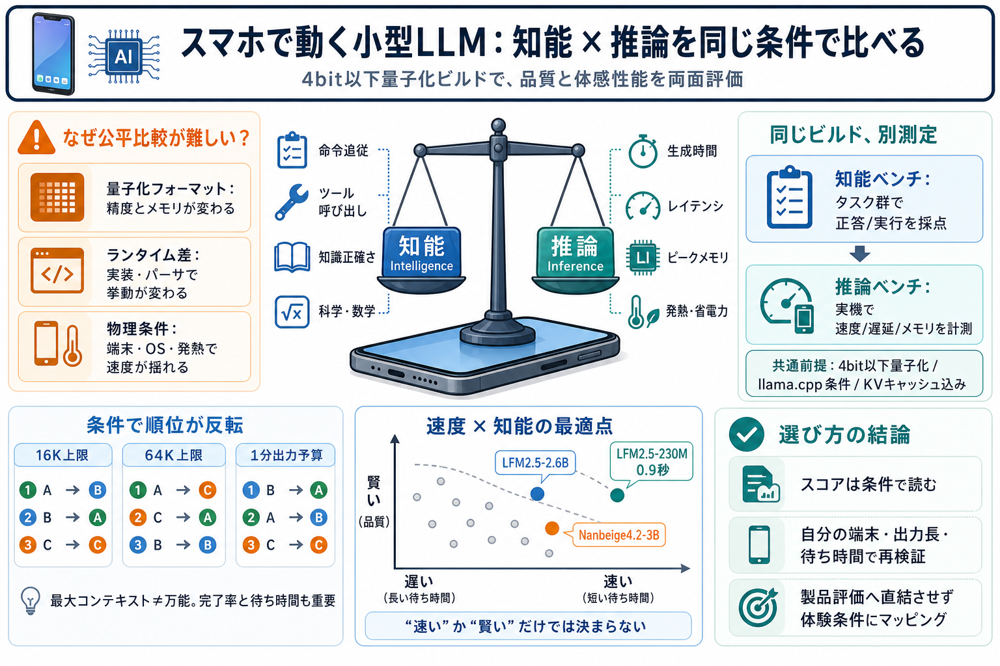

Intelligence at pocket scale: Benchmarking small models and mobile phones | Artificial Analysis
Liquid AI has developed Pipette, a mobile device inference benchmarking product, and open-sourced it onGitHub. We have i…

Liquid AI has developed Pipette, a mobile device inference benchmarking product, and open-sourced it onGitHub. We have i…
“Small” models are all models that fit inside 8 GB of memory after quantization, including KV cache at 8K context.View a…
We expect both the intelligence and inference benchmarks to evolve over time, as new models, devices, inference framewor…
full configuration: model + quantization + runtime + device. The launch dataset covers five on-device performance metric…
We are the first to provide a thorough benchmarking and analysis of open source LLMs and LMMs across varying levels of q…